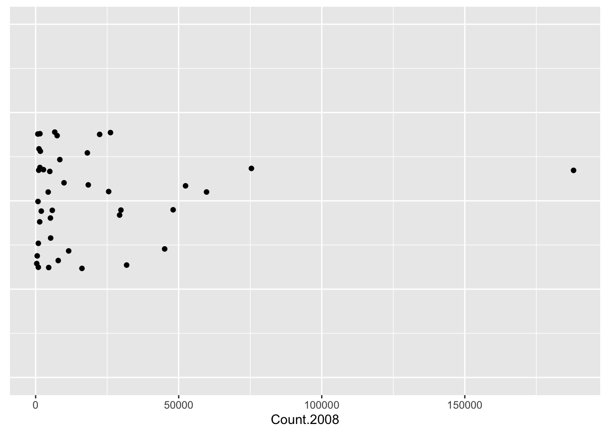
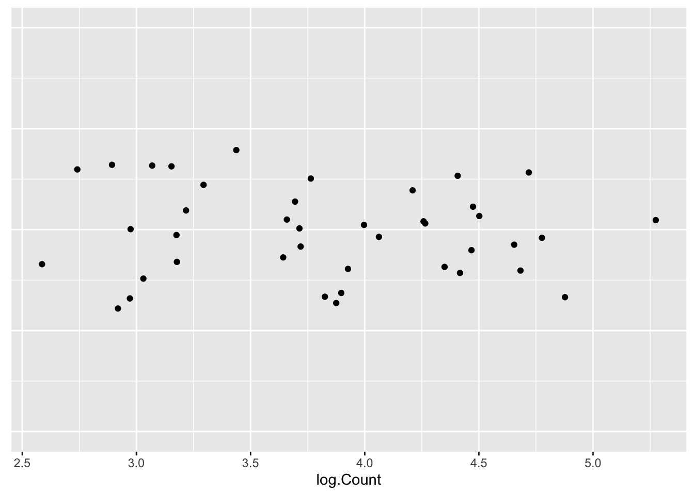
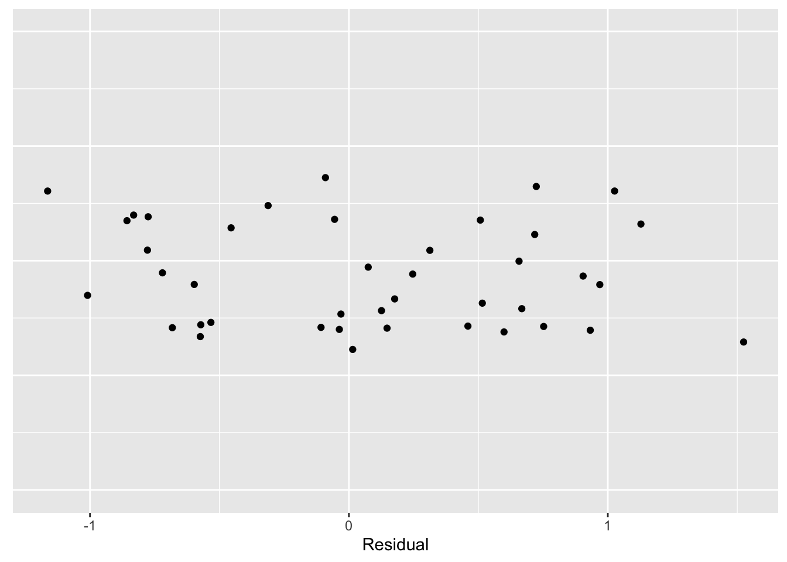

Driven by Data: The Power of Insights with R
2024
Chapter 1 Introduction
尽管你可能已经听过‘数据分析’这个术语很多次，但你可能仍不清楚其含义。以下是Paul Velleman和David Hoaglin在他们的文章“数据分析”中对数据分析的描述，该文章发表在《当代统计透视》中。
“作为统计学和不同应用领域之间的桥梁，数据分析面临着将数据转化为有用知识的挑战。数据分析融合了态度和过程，并依赖于精心选择的技术。这种态度体现了科学家对规律、模式和例外的好奇心。而这个过程则通过迭代地剥离模式，让我们能够在其中发现更微妙（通常更有趣）的模式。这些技术很少对数据做出假设，而是有意容纳意想不到的情况。”
本质上，探索性数据分析（简称为EDA）可以被视为数字侦探工作。我们面对着一批或多批数据，试图揭示其中的模式。数据分析可以被视为侦探工作，因为它与侦探的工作有相似之处，例如著名的夏洛克·福尔摩斯，他通过收集不同的证据来揭示一个谜团（比如杀人犯的身份）。我们在数据分析中的目标是总结数字的一般结构。通过这样做，我们可以用一种相对简单的方式来描述数据所传达的信息。
1.1 一个简单的例子
我们来看一个数据集, 其中显示了来自不同国家的美国移民在2008年的估计人数。该表列出了每个国家的名称、所属的世界地区以及2008年的移民数量。这些数据包含在LearnEDA软件包的移民数据集中。我已经列出了该数据表的前几行。 下载安装LearnEDAfunctions, 并且查看数据集.
## Loading required package: dplyr##
## Attaching package: 'dplyr'## The following objects are masked from 'package:stats':
##
## filter, lag## The following objects are masked from 'package:base':
##
## intersect, setdiff, setequal, union## Loading required package: ggplot2## Country Region Count.1998 Count.2008
## 1 Austria Europe 610 1505
## 2 Belgium Europe 557 829
## 3 Czechoslovakia Europe 931 1650
## 4 Denmark Europe 447 551
## 5 France Europe 2961 5246
## 6 Germany Europe 6923 8456显然，仅仅依靠表格很难理解这些移民数量的一般模式。我们有兴趣使用图表和摘要来更好地理解这些数据的总体结构。
列出一些关于这些数据的一般性问题通常是很有帮助的。下面是一些在脑海中迅速浮现的问题：
- 哪些国家对美国的移民贡献最大？
- 一个国家典型的移民人数是多少？
- 亚洲国家的移民数量是多于还是少于欧洲国家？
- 来自墨西哥的移民数量是否异常庞大？
- 相对于其人口规模，哪些国家提供了大量移民？
我们可以简单地将探索性数据分析(EDA)视为在数据中寻找模式(以及与这些模式的偏离)。这种类型的数据分析与我们大多数人学习统计学的方法根本不同。在统计中,我们假设数据代表从假设的正态分布总体中随机抽取的样本。根据这个假设，对总体平均数在样本足够大的时候就是样本的平均值。 这是一个简单的推理问题 , 我们可以用统计中的很多方法来进行回到, 例如假设检验, 置信区间等等.
这种方法被称为验证性数据分析(CDA)。我们使用概率模型来分析数据。我们写下了一系列的概率模型，这些模型可以产生观测数据，我们通过估计这些模型的未知参数来了解这些数据。
在EDA中，我们不对潜在种群做任何假设。我们不假设数据代表独立的观察或数据来自一个具有规定形状的总体。而验证性数据分析(CDA) 则是分析数据是否满足某种假设, 例如是否符合正态分布.
1.2 数据分析的4原则:
- Revelation : 在 EDA 中，强调使用图形来找到模式或显示匹配。有效地显示数据可以用数字不可能的方式传递信息。一个很好的经验法则是，在对任何汇总统计数据进行处理之前，始终使用图表来表示数据。
- Resistance: 在 EDA 中，我们希望描述大多数数据中的一般模式。在这项侦探工作中，我们不希望我们的搜索受到一些不寻常观察的不寻常的影响。因此，我们的探索性方法对异常值具有鲁棒性或不敏感性是非常重要的。 例如, 我们要描述一组数据的集中情况, 平均值不是一个鲁棒的统计量, 中位数 则是一个鲁棒的统计量.
- Reexpression : 我们将看到，数据所呈现的自然尺度并不总是显示或汇总数据的最佳尺度。在许多情况下，我们希望通过取平方根或对数将数据重新表示为一个新的尺度。
- Residual : 在一个典型的数据分析中，我们将找到一个通用的模式，我们称之为 FIT。FIT 的描述可能非常详细。但是在 EDA 中，我们希望在 FIT 的一般模式中寻找数据的偏差, 并且, 我们希望偏差尽可能的小. Residual = Data - Fit
回到上面的数据, 我们继续进行分析, 让我们在分析我们的移民数据时说明一些 EDA 原则。我们从移民数量的图表开始。一个简单的图表是一个条形图，用一个点表示数字线上适当位置上的每个值。这些点在垂直方向上随机抖动，因此可以看到重叠的点。
## ── Attaching core tidyverse packages ──────────────────────── tidyverse 2.0.0 ──
## ✔ forcats 1.0.0 ✔ stringr 1.5.1
## ✔ lubridate 1.9.3 ✔ tibble 3.2.1
## ✔ purrr 1.0.2 ✔ tidyr 1.3.0
## ✔ readr 2.1.4
## ── Conflicts ────────────────────────────────────────── tidyverse_conflicts() ──
## ✖ dplyr::filter() masks stats::filter()
## ✖ dplyr::lag() masks stats::lag()
## ℹ Use the conflicted package (<http://conflicted.r-lib.org/>) to force all conflicts to become errorsggplot(immigrants,
aes(x = Count.2008, y = 1)) +
geom_jitter() + ylim(0, 2) +
theme(axis.title.y=element_blank(),
axis.text.y=element_blank(),
axis.ticks.y=element_blank())
看看这张图表，我们发现大多数移民数量集中在0到30,000人之间，只有6个国家的移民数量较大。这实际上不是一个非常有用的图形显示，因为大多数数据都集中在值为零的位置。换句话说，这些数据严重向右倾斜。由于这种右倾的现象，我们所知道的是，有少数几个国家有大量的移民，而墨西哥有188,015名移民。我们在这个条形图中看到的是，原始数据(移民数量)并不是在图表中查看的最佳尺度。我们对数据进行取对数.
# ggplot(immigrants,
# aes(x = log(Count.2008), y = 1)) +
# geom_jitter() + ylim(0, 2) +
# theme(axis.title.y=element_blank(),
# axis.text.y=element_blank(),
# axis.ticks.y=element_blank())
immigrants <- mutate(immigrants,
log.Count = log10(Count.2008))
ggplot(immigrants,
aes(x = log.Count, y = 0)) +
geom_jitter() + ylim(-1, 1) +
theme(axis.title.y=element_blank(),
axis.text.y=element_blank(),
axis.ticks.y=element_blank())
这是一个更好的图形显示来查看这些数据。对数计数在2.50和5.20之间均匀分布，人们可以在数据中看到更多有趣的结构。特别是，我们可以看到一个在对数移民计数约为3附近的国家聚集，以及在对数计数约为4附近的第二个聚集。一个典型的对数移民计数大约为3.75。我们仍然可以看到墨西哥的大量对数计数为5.27；但现在我们也可以看到一个对应挪威的小对数计数为2.58。
我们可以用3.75来总结这些数据-这是我们对这些数据的 FIT。我们可以通过从每个日志计数中减去 FIT 来计算残差: RESIDUAL = logCOUNT-FIT = logCOUNT-3.75. 计算残差, 并对残差进行可视化.
immigrants <- mutate(immigrants,
Residual = log.Count - 3.75)
ggplot(immigrants,
aes(x = Residual, y = 0)) +
geom_jitter() + ylim(-1, 1) +
theme(axis.title.y=element_blank(),
axis.text.y=element_blank(),
axis.ticks.y=element_blank())
现在我们可以更详细地查看这些数据了。我们发现，在对数计数尺度上，有两个国家的移民计数比平均值小1；另外有一个国家（墨西哥）的移民计数约大于平均值1.5。这个残差图表明了对数计数与3.75平均值的接近程度。
这个例子展示了我们一些EDA原则。
- 它展示了使用图形显示来观察数据的基本模式。
- 它表明原始数据的尺度可能不是最适合查看数据的尺度，人们可以通过适当的转换（在这里是对数）来重新表达数据，以改善数据的呈现方式。
- 人们可以通过“典型”值轻松总结重新表达的数据，并且可以计算出显示数据与这个典型值偏差的残差。
我们学到了什么？让我们回到关于这些数据的问题，看看我们在这个简短的数据分析中学到了什么：
- 哪些国家为美国提供了最多的移民？
答案：墨西哥是迄今为止向美国提供移民最多的国家。
- 一个国家的典型移民数量是多少？
答案：在对数尺度上，一个典型的移民计数是3.75。
- 亚洲国家提供的移民数量比欧洲国家多还是少？
答案：我们在简要分析中没有涉及这个问题，但我们很快将讨论如何比较不同批次的数据。
- 。我们是否从墨西哥获得了异常数量的移民？
答案：是的 - 这个分析证实了墨西哥正在提供大量的移民。
- 哪些国家相对于其人口规模提供了大量的移民？
答案：为了回答这个问题，我们需要收集表格中国家的人口数据。这将是一项有趣的研究。
1.3 sumamry
总结的内容放在最前面, 没时间就直接看下面内容.
1.3.1 数据可视化
- geom_point: 在绘图中添加点，关键参数包括 x、y、size、stroke、colour、alpha 和 shape。
- geom_smooth: 在 x-y 图中添加线条和置信区间，可以使用 se 参数关闭标准误差，可以使用 method 参数更改算法以生成线条，使用 linetype 参数可以生成虚线。
- geom_bar: 将值堆叠在一起以创建条形图（默认统计方法为 “count”，也可以更改为 “identity”，可能需要将 y = ..prop.. 来显示 y 值的比例）。位置参数 position 可以设置为 “stacked”，也可以设置为 “identity”、“dodge”、“fill”。
- geom_count: 使用数据帧中的离散行值制作条形图。使用 fill 参数填充条形图，使用 colour 参数设置边框颜色。
- geom_jitter: 类似于 geom_point()，但添加了随机性，可以使用 width 和 height 参数控制随机性（也可以使用 geom_point()，并设置 position = “jitter”）。
- geom_boxplot: 绘制箱线图。
- geom_polygon: 可以用于绘制点，需要使用从 map_data() 创建的对象。
- geom_abline: 使用 intercept 和 slope 参数创建线条。
- facet_wrap: 根据一个变量对多个图进行分面；scales = “free_x”（或“free”、“free_y”）是有帮助的参数。
- facet_grid: 根据一个或两个变量对多个图进行分面；space 是一个有用的参数（不在 facet_wrap() 内）。 patchwork 包也可以合并多幅图形.
- stat_count: 类似于 geom_bar()。
- stat_summary: 可以使用它来显示范围，例如使用 fun.ymin = min、fun.ymax = max 和 fun.y = median。
- stat_bin: 类似于 geom_histogram()。
- stat_smooth: 类似于 geom_smooth，但可以使用非标准的几何图形。
- 位置调整：identity、dodge、fill。
- 用于覆盖默认映射的方法。 coord_quickmap: 设置地图的长宽比。 coord_flip: 翻转 x 和 y 坐标。coord_polar: 使用极坐标 - 不经常使用。 coord_fixed: 固定 x 和 y 轴使其具有相同的刻度间距。
1.3.2 数据处理
- 过滤器（filter()）：根据一些条件过滤行
- 排序（arrange()）：根据一些条件对行排序 desc：降序排序而不是升序（通常与arrange或排名函数一起使用）
- 选择（select()）：根据名称、位置或条件选择列
- 辅助函数：everything、starts_with、ends_with、contains、matches：选择与正则表达式匹配的变量；num_range(“x”, 1:3)：匹配x1、x2和x3
- 重命名（rename()）：重命名变量而不丢弃未指定的变量
- 变异（mutate()）：更改列并添加新列
- 分组（group_by()）：按一些字段的值进行分组操作
- 汇总（summarise()）：将数据框折叠为单个行或聚合行–通常与group_by()一起使用，通常用于聚合 %>%：将前一个输出传递到下一个参数的第一个位置，可以理解为“然后你做…”
- 计数（count）：<group_by([var])>的快捷方式–><summarise(n = n())>
- near：两个值是否基本相等（用于测试等价性并处理浮点数中的奇异性）
- is.na：如果是NA（和相关值），输出为TRUE，否则为FALSE
- between：between(Sepal.Length, 1, 3)相当于Sepal.Length >=1 & Sepal.Length <=3
- 转换（transmute）：mutate但仅保留输出的列
- 提前（lead）、滞后（lag）：在提前或滞后位置获取值n位置
- 对数（log、log2、log10）：以e、2、10为底的对数函数
- 累积求和（cumsum）、累积乘积（cumprod）、累积最小值（cummin）、累积最大值（cummax）、累17. 积平均值（cummean）：常见的累积函数
- <、<=、>、>=、!=：逻辑运算符
- 最小排名（min_rank）、行编号（row_number）、稠密排名（dense_rank）、百分位排名（percent_rank）、累计分布（cume_dist）、n分位数（ntile）：常见的排名函数
- 位置：mean；median
- 散布度量：标准偏差（sd）、四分位距（IQR()）、中位数绝对偏差（mad()）
1.3.3 数据探索
- cut_width: 指定每个切割的宽度（通常与 geom_boxplot 一起使用）。
- cut_number: 指定要创建的组数，允许可变的切割宽度（通常与 geom_boxplot 一起使用）。
- geom_histogram: 主要参数是 bins、binwidth。
- geom_freqpoly: 如果希望有重叠的直方图（输出线），可以使用此功能。 可以将 y 设置为 ..density.. 来使每个图的比例尺相等（类似于 geom_density 的效果）。
- geom_boxplot: 使用 outlier.colour、outlier.fill 等参数来调整离群值。
- geom_violin: 为 x 的每个因子创建双面直方图。
- geom_bin2d: x 和 y 值的散点图，但使用着色来确定每个点的计数/密度。
- geom_hex: 与 geom_bin2d 类似，但是使用六边形形状进行着色。
- reorder: 参数1 = 要重新排序的变量，参数2 = 重新排序的依据变量，参数3 = 重新排序的函数（例如，中位数、均值、最大值等）。
- coord_cartesian: 调整 x、y 窗口而不过滤视图中排除的值。
- xlim；ylim：调整窗口并过滤出不在窗口内的值（与 scale_x(/y)_continuous 使用相同的方法）。
- ifelse: 矢量化的 if else 函数（不要与 if 和 else 函数混淆）。 dplyr::if_else 是更严格的替代方法。
- case_when: 创建依赖于现有变量的复杂组合的新变量。
1.3.4 数据整理
- spread: 逆标准化，例如 spread(iris, Species)。
- gather: 标准化，例如 gather(mpg, drv, class, key = “drive_or_class”, value = “value”)。
- separate: 将一个列分成多个列，例如 separate(table3, rate, into = c(“cases”, “population”), sep = “/”)。默认使用非字母数字字符作为分隔符，也可以使用数字按宽度分隔。
- extract：类似于 separate，但指定要提取的内容，而不是要拆分的内容。
- unite：separate 的逆操作。
1.3.5 多数据集合并
- mutating joins：从另一个数据框中匹配的观察添加新变量到一个数据框中。inner_join：当相等时匹配。left_join：保留第一个参数中的所有观察。right_join：保留第二个参数中的所有观察。full_join：保留第一个和第二个参数中的所有观察。
- filtering joins：基于它们是否与另一个表中的观察匹配来过滤一个数据框中的观察。semi_join(x, y)：保留在 y 中有匹配的所有观察在 x 中的观察。anti_join(x, y)：删除在 y 中有匹配的 x 中的所有观察。
- Set operations：将观察看作集合元素进行处理。intersect(x, y)：仅返回同时在 x 和 y 中的观察（当输入是数据框时，是跨行比较所有值）。union(x, y)：返回 x 和 y 中唯一的观察。setdiff(x, y)：返回在 x 中但不在 y 中的观察。
1.3.6 字符串
writeLines: 查看字符串的原始内容（在新行上打印向量中的每个字符串）。str_length: 字符串中的字符数。str_c: 结合两个或多个字符串。- 使用
collapse参数将字符串向量合并为单个字符串。
- 使用
str_replace_na: 将 NA 打印为 “NA”。str_sub: 使用start和end参数指定要删除（或替换）的位置，也可以使用负数表示从后面开始。str_to_lower、str_to_upper、str_to_upper: 更改字符串大小写。locale参数（处理字符中的轻微差异）。
str_order、str_sort: 更强大的order和sort版本，允许使用locale参数。str_view、str_view_all: 显示字符和正则表达式匹配。\d：匹配任何数字。\s：匹配任何空白字符（例如空格、制表符、换行符）。[abc]：匹配 a、b 或 c。[^abc]：匹配除 a、b 或 c 之外的任何字符。{n}：恰好 n 次。{n,}：至少 n 次。{,m}：最多 m 次。{n,m}：介于 n 和 m 之间。str_detect：返回逻辑向量的 TRUE/FALSE 值。str_subset：从str_detect中选择 TRUE 值的子集。str_count：字符串中的匹配次数。str_extract：提取匹配项的实际文本。str_extract_all：返回所有匹配项的列表。simplify = TRUE返回一个矩阵。
str_match：类似于str_extract，但以矩阵的形式给出每个匹配的各个组件，而不是字符向量（还有str_match_all）。tidyr::extract：类似于str_match，但用匹配项的名称命名列，并将其移到新列中。str_replace、str_replace_all：用新字符串替换匹配项。str_split：将字符串拆分为片段 - 默认为单词（返回列表）。simplify = TRUE再次返回一个矩阵。
boundary用于指定拆分级别，例如str_view_all(x, boundary("word"))。str_locate、str_locate_all：给出每个匹配的起始和结束位置。regex在匹配中指定更多选项，例如str_view(bananas, regex("banana", ignore_case = TRUE))。multiline = TRUE允许^和$匹配每行的开头和结尾（而不仅是字符串的开头和结尾）。comments = TRUE允许您在复杂的正则表达式中添加注释。dotall = TRUE允许.匹配更多内容而不仅仅是字母，例如\n。
fixed、coll是与正则表达式相关的替代方案。apropos搜索全局环境中所有可用的对象（例如，如果你记不住函数名）。dir：列出目录中的所有文件。pattern参数采用正则表达式。
stringi：比stringr更全面的包（大约有stringr函数的 5 倍多）。
1.3.7 因子
factor: 基于提供的水平将变量转换为因子。fct_rev: 颠倒因子的顺序。fct_infreq: 根据递增频率对水平进行排序。fct_relevel: 允许您将水平移动到顺序的前面。fct_inorder: 根据数据中出现的顺序值对现有因子进行排序。fct_reorder: 根据其他指定变量的值（默认为中位数）对输入因子进行排序，具有 3 个输入参数：f：要修改的因子，x：要根据其排序的输入变量，fun：要在x上使用的函数，还有desc选项。fct_reorder2: 根据其他指定变量的最大值对输入因子进行排序（用于使图例对齐）。fct_recode: 允许您更改每个水平的值。fct_collapse: 是fct_recode的一种变体，允许您提供多个旧水平作为向量。fct_lump: 允许您合并小组，使用n来指定要结束的组数。
1.3.8 时间日期
today: 获取当前日期。now: 获取当前日期时间。ymd_hms: 这是一组直接设置函数的示例，它们接受字符串或不带引号的数字，并输出日期或日期时间。make_datetime: 从单独的组件创建日期时间，例如make_datetime(year, month, day, hour, minute)。as_date_time和as_date: 让您在日期时间和日期之间切换，例如as_datetime(today())或as_date(now())。- 访问器函数：从现有日期时间中提取组件的函数：
year,month,mday,yday,wday,hour,minute,second。month和wday可以使用label = TRUE提取缩写名称，使用abbr = FALSE提取完整名称。- 您还可以使用这些函数设置特定的组件，例如
year(datetime) <- 2020。
update: 允许您一次指定多个值，例如update(datetime, year = 2020, month = 2, mday = 2, hour = 2)。- 舍入函数到最近的时间单位：
floor_date,round_date,ceiling_date。
as.duration: 将时间差转换为持续时间。- 持续时间（可以相加和相乘）：
dseconds,dhours,ddays,dweeks,dyears。
- 期间（可以相加和相乘），比持续时间更可能做您期望的事情：
seconds,minutes,hours,days,weeks,months。
Interval: 具有起始点的持续时间，使其精确并且可以确定确切的长度，例如(today() %--% next_year) / ddays(1)可以找到确切的持续时间。Sys.timezone: 查看 R 认为您当前所在的时区是什么。tz参数在ymd_hms中让您更改打印行为（不是底层值，因为默认为 UTC，除非更改）。with_tz: 允许您将现有的日期时间对象打印到特定的其他时区。force_tz: 当对象被错误标记了错误的时区并且需要修复时使用。
1.3.9 图形细节调整
- 使用
labs()添加标签，常见参数包括：title、subtitle、caption、x、y、colour等。 - 对于数学公式，使用
quote，参见?plotmath。 例如，在labs()中可以这样使用：y = quote(alpha + beta + frac(delta, theta))。 geom_text()类似于geom_point()，但是使用label参数添加文本。 使用nudge_x和nudge_y调整位置。 使用vjust（‘top’、‘center’ 或 ‘bottom’）和hjust（‘left’、‘center’ 或 ‘right’）控制文本的对齐。 可以使用+Inf和-Inf将文本放置在确切的角落。 使用stringr::str_wrap()自动添加换行符。geom_label()类似于geom_text()，但是绘制一个框，使数据更容易查看（可以调整背景框的透明度和填充颜色）。ggrepel::geom_label_repel()类似于geom_label()，但防止标签重叠。- 使用
geom_hline()和geom_vline()添加参考线（通常使用size = 2和colour = white）。 - 使用
geom_rect()绘制点周围的矩形（由xmin、xmax、ymin、ymax控制）。 - 使用
geom_segment()以箭头形式突出显示一个点（常见参数：arrow、x、y、xend、yend）。 - 使用
annotate手动添加标签（不来自数据框的值）。 - 使用
scale_x_continuous()、scale_y_continuous()、scale_colour_discrete()等函数调整比例尺。breaks和labels是关键参数（可以设置labels = NULL删除值）。 - 对于连续比例尺，尝试
scale_colour_gradient()、scale_fill_gradient()、scale_colour_gradient2()（两种颜色渐变，例如正负值）、viridis::scale_colour_viridis()。 - 日期比例尺略有不同，例如
scale_x_date()，接受参数date_labels（例如date_labels = "'%y"）和date_breaks（例如date_breaks = "2 days"）。 - 使用
scale_x_log10()、scale_y_log10()等函数进行特定转换。 - 使用
theme()自定义图的非数据组件。 例如，使用theme(legend.position = "none")可以移除图例。 - 使用
guides()控制单个图例的显示，与guide_legend()或guide_colourbar()结合使用。 - 使用
coord_cartesian()使用xlim和ylim参数进行缩放。 - 可以自定义主题，例如
theme_bw()、theme_classic()，查看ggthemes中的其他主题。 - 使用
ggsave()默认保存最近的图。 主要选项包括：fig.width、fig.height、fig.asp、out.width、out.height（详情见文档）。 其他选项包括：fig.align、fig.cap、dev（例如dev = "png"）。